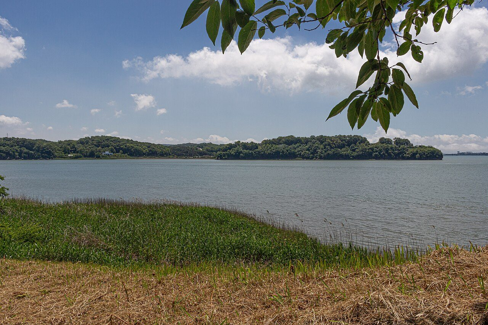
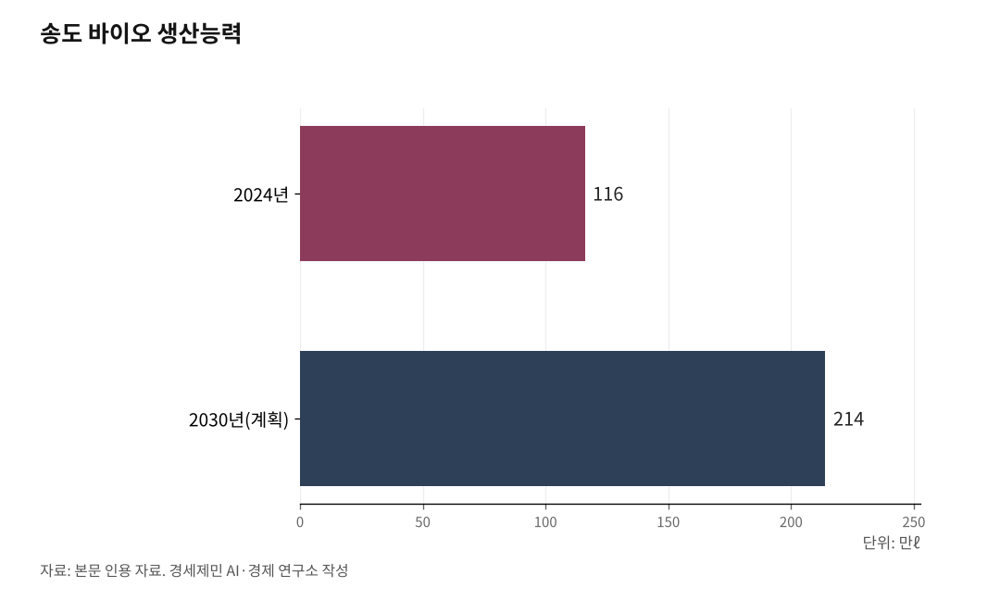

[신도대교개통] 다음은 도로철도 영종강화대교와 강화경제자유구역
오늘 열린 신도평화대교엔 철도가 빠졌다… 다음 다리엔 철길을 함께 얹어야 한다
도로철도 영종강화대교로 잇고, 그 배후에 강화경제자유구역을 첨단산업으로 채운다
AI경제저널=김갑봉 기자 | 인하대 해양AI융합센터 김갑봉 연구교수(물류학)│2026년 7월 14일 영종도와 신도를 잇는 신도평화대교가 열렸다. 서해남북평화도로의 첫 다리다. 반가운 일이지만 아쉬움이 남는다. 왕복 2차로 도로만 놓였고, 철도가 빠졌다. 다음 걸음은 강화다. 영종에서 강화로 건너는 다리에는 도로와 철도를 함께 얹어야 한다.

신도대교 다음은 강화다
신도평화대교는 총연장 3.26km 왕복 2차로 도로다. 서해평화도로의 1단계로, 영종에서 신도를 지나 강화로 이어진다. 인천시는 영종에서 강화 하점면까지 35.5km를 국도 48호선 지선으로 지정하려 하고, 이 도로는 강화에서 갈라져 김포·파주·철원을 거쳐 동해 고성까지 닿는 동서평화도로와, 북으로 개성·해주로 향하는 남북평화도로로 뻗는다. 전체 80.4km, 사업비 2조4322억원으로 잡힌다.
문제는 다리마다 도로만 놓인다는 데 있다. 영종에서 강화로 건너는 다음 다리는 도로와 철도를 함께 싣는 병용교라야 한다. 차와 기차가 한 다리를 위아래로 나눠 쓰는 도로·철도 병용교, 이름하여 영종강화대교다. 인천공항으로 드는 영종대교가 이미 그 방식이다. 상부에 왕복 6차로 도로를, 하부에 복선 철도와 도로를 얹은 복층 다리다. 영종강화대교도 그렇게 놓아, 도로 옆에 철길을 나란히 두어야 한다.

대륙 화물은 서울을 못 지난다
철도까지 얹어야 하는 까닭은 분명하다. 철도의 본질이 화물이기 때문이다.
사람만 나른다면 대륙은 비행기가 빠르다. 대륙철도의 실익은 짐에 있다. 그런데 고속철도(KTX)는 여객 전용이라 화물을 싣지 못한다. 대륙으로 짐을 보내려면 화물까지 싣는 전철화 철도가 따로 있어야 한다.
게다가 그 화물은 서울 도심을 지날 수 없다. 도심 선로는 이미 포화이고, 1km에 이르는 장대 화물열차를 도시철도와 섞을 수 없다. 그래서 여객과 화물의 길을 나눠야 한다. 사람은 인천공항 직결 철도와 서울역이 맡고, 대륙으로 가는 짐은 서울을 비켜 인천항에서 영종~강화를 거쳐 북으로 올라가야 한다. 영종강화대교가 그 화물길의 첫 관문이다.
강화에서 개성으로, 개성에서 대륙으로
영종~강화를 이은 철길은 북한 서해안을 따라 해주와 개성으로 든다. 여기서 개성이 요충지가 된다. 개성에서 원산을 잇는 새 노선을 놓으면, 개성이 서와 동으로 갈라지는 분기점이 된다.
서로는 신의주와 단둥을 지나 중국 철도망으로 든다. 중국횡단철도(TCR)와 만주횡단철도(TMR), 몽골횡단철도(TMGR)가 거기서 갈린다. 동으로는 원산과 나진을 지나 하산에서 시베리아횡단철도(TSR)와 만난다. 인천 바다로 든 짐이 개성에서 두 대륙 간선으로 나뉘는 것이다.
다만 북한 철도는 낡았다. 잇는 것으로는 모자라고 새로 놓아야 한다. 일제가 수탈을 위해 깐 철도가 아니라, 미래를 위해 21세기 규격으로 다시 놓는 화물 철도다. 복선과 전철화, 긴 대피선을 갖춰야 대륙 간선과 규격이 맞는다.
강화경제자유구역, 물류가 산업을 부른다
길과 물류는 산업을 부른다. 강화 남단은 지금 경제자유구역 지정을 밟고 있다. 화도·길상·양도면 20.26㎢로, 청라국제도시보다 넓다. 인천시는 2025년 말 지정을 목표로 산업통상자원부에 신청했다. 이름은 강화국제도시, 방향은 첨단산업단지다.
여기에 인천의 강점을 심어야 한다. 인천은 바이오와 반도체가 세다. 송도 바이오는 2024년 생산능력 116만ℓ로 세계 최대이고, 2030년 214만ℓ로 늘어난다. 반도체는 후공정이 강해, 세계 2·3위권인 앰코테크놀로지코리아와 스태츠칩팩코리아, 장비 기업 한미반도체가 인천에 있다. 강화를 송도 바이오의 배후 클러스터로, 반도체 후공정의 확장지로 삼을 수 있다. 그 데이터를 담을 데이터센터도 인천에 있어야 한다.
열쇠는 물류다. 영종~강화가 도로와 철도로 이어지면 강화 산단이 인천공항, 인천항과 곧장 묶인다. 무게 대비 값이 커 항공에 기대는 반도체, 온도를 지켜야 하는 바이오, 대중국 해상물류가 모두 짧아진다. 산업은 하루아침에 생기지 않는다. 인천이 이미 잘하는 것을 강화로 넓혀야 뿌리내린다.
신도대교는 첫걸음이었다. 다음은 강화다. 도로와 철도를 함께 얹은 병용교로 잇고, 그 다리 끝에 첨단산업 도시를 세우는 것. 그것이 인천을 서해의 관문이자 대륙으로 나가는 출발점으로 세우는 길이다.
※ 이 기사는 AI 프로그램 클로드를 활용해 작성했습니다.
참고문헌
· "인천 영종도~신도 '신도평화대교' 개통…서해남북평화도로 시작", 뉴스핌, 2026.7.14., https://www.newspim.com/news/view/20260714001053
· "영종~강화 평화도로 2026년 국도 48호 지정 준비", 인천투데이, https://www.incheontoday.com/news/articleView.html?idxno=209895
· "인천 강화 남단 경제자유구역 확대 '첫발'", 경기일보, 2024.12.1., https://www.kyeonggi.com/article/20241201580178
· "인천, 반도체 특화단지 출사표…세계 2·3위 후공정 업체 보유", 한국경제, 2023.2.23., https://www.hankyung.com/article/2023022370351
· "인천 송도 바이오의약품 생산능력 지속 성장…2030년 214만ℓ 전망", 아시아경제, 2026.2.19., https://www.asiae.co.kr/article/2026021909464717441
사진 출처
· [대표사진] Nt, "Natural Scenery in Ganghwa Island 6.jpg", 위키미디어 공용, CC0, https://commons.wikimedia.org/wiki/File:Natural_Scenery_in_Ganghwa_Island_6.jpg
※ 이 기사는 인공지능을 활용해 작성했습니다.
관련기사
- [127년 한국철도⑫] 세계 3위 인천공항, 제2공항철도로 부산·목포까지 KTX 직결하라
- [127년 한국철도⑪] 빅3만 흑자, 11곳은 적자… 짧은 하늘길은 철도가 지운다
- [127년 한국철도⑩] 꽉 찬 경부고속선, 하루 190회가 한계… 증설과 재설계, 둘 다 급하다
- [127년 한국철도⑨] 북녘 철길 끊겼다… 화물열차 통째로 배에 실어 대륙으로
저작권자 © AI경제저널 무단전재 및 재배포, AI학습 및 활용 금지